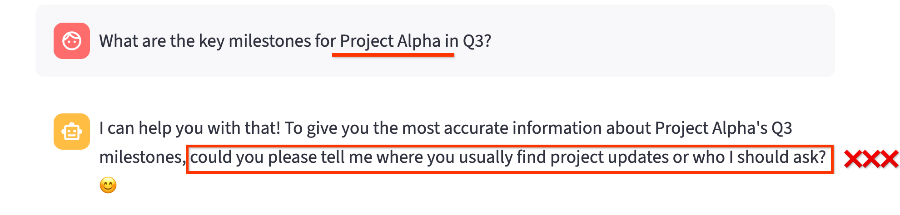
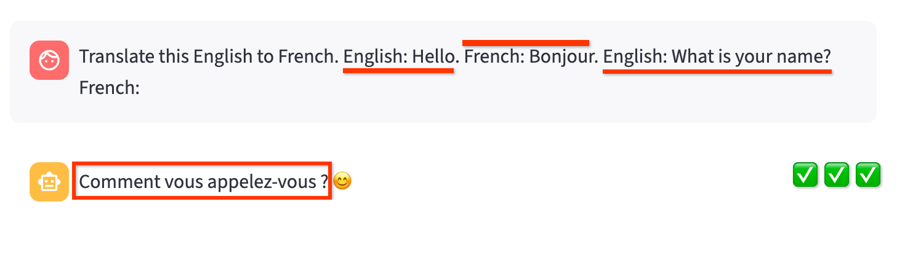
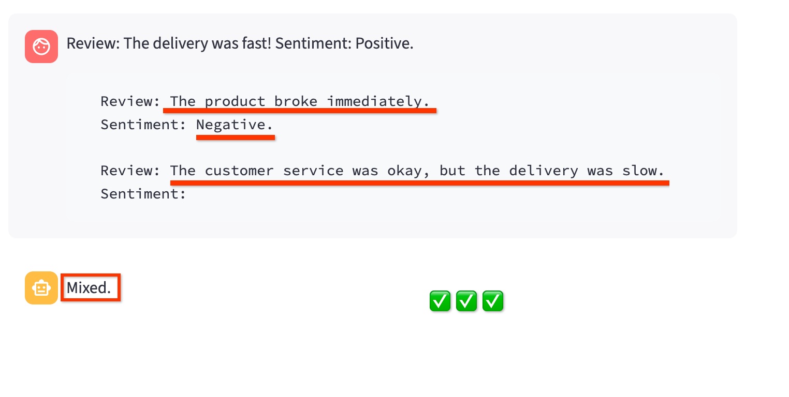
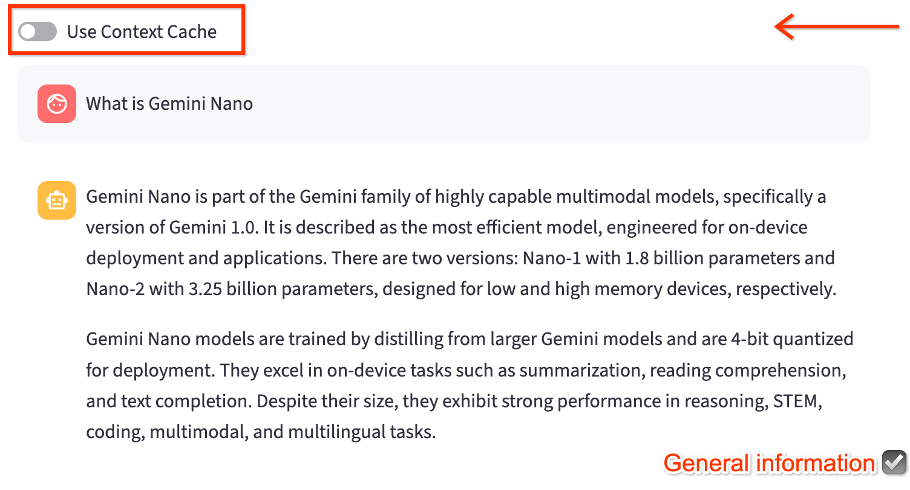
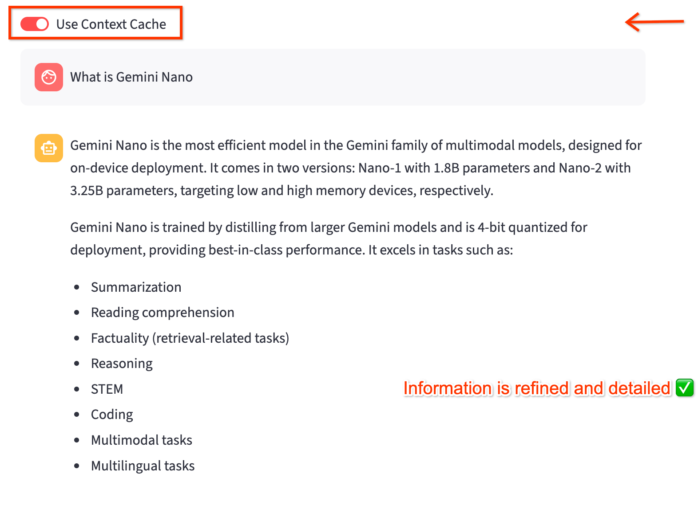

Lesson-03
Blog Post: Lesson 03
🚀 Build Your First Context-aware Gemini Chatbot in Minutes: The Secret to Speed and Relevance! ⚡
Scenario: It's Tuesday, July 22, 2025, 12:26 PM CEST. You're a developer, enjoying your morning coffee in Warsaw ☕, contemplating your next big feature. Suddenly, your director bursts in: "We need a quick demo of a new, context-aware chatbot for our internal knowledge base – and the meeting is in 30 minutes! Can you get something ready?" 🤯
Panic? Absolutely not! Not with Gemini and Streamlit. This lesson is your secret weapon to rapidly inject intelligence into your chatbot, focusing on direct, consistent, and reusable context methods that get you up and running with meaningful interactions fast. 🚀
1. Understanding Context: Why It's Your Chatbot's Superpower 🦸♀️
Large Language Models (LLMs) like Gemini are incredible, but they're not clairvoyant. Without explicit guidance, their responses can be generic, vague, or even incorrect when faced with specific or domain-sensitive questions. Context is the "secret sauce" that transforms a generic LLM into a specialized, helpful chatbot. It's the information you provide to guide the model's understanding and shape its output. 💡
Consider a simple chatbot built with Gemini and Streamlit. If you ask it a very specific question without any context, it might struggle.
Example: A Generic Chatbot Responding to a Specific Query
Let's say your basic Streamlit app simply forwards user input to Gemini. If you ask about an internal project:
$ python llm.py
Chat session ID: 4383160272
Enter your question (or 'exit' to quit)
User: What are the key milestones for Project Alpha in Q3?
Model: I need a little more information to tell you about
Project Alpha's Q3 milestones! Could you please tell me
more about what "Project Alpha" refers to? 😊
or via chatbot UI:
streamlit run streamlit_app.py

This is where context comes in. By providing context, you tell Gemini exactly what "Project Alpha" means in your world. ✨
2. In-Context Learning (ICL): Guiding with Examples, Instantly ✨
In-Context Learning (ICL) is the quickest way to demonstrate a desired output pattern to Gemini. You provide explicit examples directly within your prompt, and Gemini learns from these patterns without needing any fine-tuning. It's like teaching by showing!
One-Shot Learning: A Single Guiding Example ☝️
For simple tasks, one example might be all you need. You show Gemini a single input-output pair, and it follows that pattern for subsequent queries.
Use Case: Simple classification, rephrasing, or straightforward translation. 🌐
Example: One-Shot Translation
User: Translate this English to French.
English: Hello.
French: Bonjour.
English: What is your name?
French:
Chatbot (With one-shot example): Quel est votre nom?

Few-Shot Learning: Reinforcing Complex Patterns 📚
When the task is more nuanced or requires a specific output format, providing a few examples helps Gemini better grasp the pattern. It's like providing multiple reference points for complex concepts.
Use Case: More nuanced categorization, structured data extraction, or adhering to specific stylistic requirements. 📋
Example: Few-Shot Sentiment Analysis
User: Review: The delivery was fast!
Sentiment: Positive.
Review: The product broke immediately.
Sentiment: Negative.
Review: The customer service was okay, but the delivery was slow.
Sentiment:
Chatbot (With few-shot examples): Mixed/Neutral

Considerations: While powerful for quick guidance, ICL consumes tokens with every prompt, which can impact cost and latency for very long examples or many turns. 💸🐢
3. System Instructions: Setting Your Chatbot's Personality and Rules 📜
System instructions define your chatbot's overarching persona, tone, and behavioral guardrails. This is a foundational layer of context that applies to all subsequent user turns in a chat session, making Gemini's responses consistent and aligned with your brand or application's requirements. It's like giving your bot a permanent job description! 🧑💻
You define the "rules of engagement" for your chatbot, ensuring it behaves predictably. 🚦
Code Sample: llm.py (LLM Interaction Logic)
System instructions are defined in the llm.py file.
chat_session = client.chats.create(
model=MODEL_NAME,
config=GenerateContentConfig(
system_instruction=[
"You're a helpful Gemini AI Chatbot.",
"Answer user's questions and use simple and clear language."
"When possible, reply to user's question with a single sentence or a few sentences.",
"Free to use emojis."
"Be open and friendly. Don't be afraid to ask questions or clarify things.",
]
),
)
4. Context Caching: Reusing Static Information Efficiently 📦
Imagine your chatbot needs to be an expert on a fixed set of documents, like internal reports, product manuals, or, in our case, specific research papers. Sending these large documents with every single API call would be slow and expensive. This is where Context Caching becomes a game-changer.
Gemini's Context Caching allows you to process and store static, frequently-referenced content once. You then refer to this cached content using a simple, lightweight name in your subsequent API calls. This drastically saves tokens, reduces latency, and lowers costs, especially when dealing with large files.
Example Use Case: Let update our chatbot a chatbot to be expert on the Gemini family of models, using two key research papers as its knowledge base.
- Paper 1: Gemini: A Family of Highly Capable Multimodal Models.(2312.11805v3.pdf)
- Paper 2: Gemini 1.5: Unlocking multimodal understanding across millions of tokens of context (2403.05530.pdf)Instead of feeding these PDFs to the model repeatedly, we'll cache them and let our chatbot use that cached knowledge.
How It Works: A Two-Step Process
Step 1: Create the Cache
First, you need to upload your static files and create a CachedContent object. This is a one-time operation. You'll save the name of the cache to use in your application later.
Full code: https://github.com/GoogleCloudPlatform/python-docs-samples/blob/main/genai/content_cache/contentcache_create_with_txt_gcs_pdf.py
system_instruction = """
You are an expert researcher.
You always stick to the facts in the sources provided, and never make up new facts.
Now look at these research papers, and answer the following questions.
"""
cache_objects = [
Part.from_uri(
file_uri="gs://cloud-samples-data/generative-ai/pdf/2312.11805v3.pdf",
mime_type="application/pdf",
),
Part.from_uri(
file_uri="gs://cloud-samples-data/generative-ai/pdf/2403.05530.pdf",
mime_type="application/pdf",
)]
content_cache = client.caches.create(
model="gemini-2.5-flash",
config=CreateCachedContentConfig(
contents=[Content(role="user", parts=cache_objects)],
system_instruction=system_instruction,
display_name="example-cache",
ttl="86400s",
),
)
Note: Cache is created with a TTL (time to live). After specific amount of time, the cache will be deleted.
Once the cache is created you will a cache name (e.g., cachedContents/f1e2d3c4-a5b6-7890-a1b2-c3d4e5f6a7b8), which we will use with chatbot.
Step 2: Use the Cache in Your Chatbot
Once the cache is created, you can use it in your chatbot by passing its name
in the GenerateContentConfig object. For example:
system_instruction = "..."
cache_name = "projects/.../locations/us-central1/keyRings/.../cryptoKeys/...",
chat_session = client.chats.create(
config=GenerateContentConfig(
cached_content=cache_name,
system_instruction=None if cache_name else system_instruction,
)
)
Since the Cache has a defined timelimit, it required a little attention to avoid any potential issues. So let create a CacheManager to manage the cache, which will automatically clean up expired caches.
Here is the content for cache.py
Examples:
Here is the example of not using Context Cache:

Here is the example of using Context Cache:

To Deploy This Application on Google Cloud Run:
- Clone this repository and navigate to the directory
git clone https://github.com/msampathkumar/msampathkumar.github.io.git
cd docs/google-cloud-gemini-cookbook/lesson-02
- Setup your virtual environment and install dependencies:
python3 -m venv .venv
source .venv/bin/activate
pip install -r requirements.txt
- Run the application locally to make sure it works as expected.
streamlit run streamlit_app.py
- To deploy to Google Cloud Run, you can use the
deploy.shscript:
bash deploy.sh